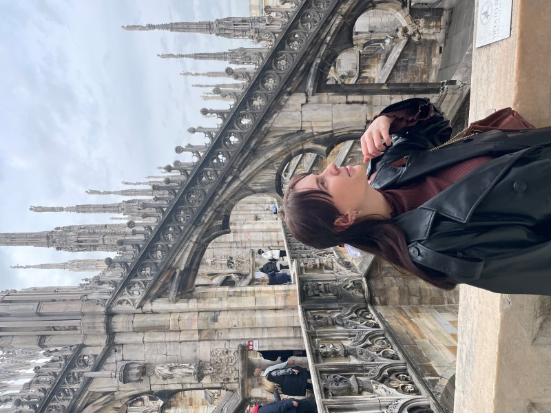

About me
I'm 21 years old and currently pursuing a Bachelor's degree in Electrical Engineering and Management in Konstanz, Germany. Alongside my studies, I've developed a strong interest in computer science and plan to deepen my knowledge in this field by pursuing a Master's degree in Computer Science. In my free time, I enjoy reading across various genres and love traveling with friends to explore new places and cultures.

CV
- University of Applied Sciences Konstanz
B.Eng. in Electrical Engineering and Management
2022 – present
📍Konstanz, Germany - STAR ELECTRONICS GmbH & Co. KG
Internship in Quality Assurance
2024 – 2025
📍Göppingen, Germany - Cinestar Konstanz
Working Student
2023 – 2024
📍Konstanz, Germany - eLaketric Racing Team
Member of the Organizational Department
2022
📍Konstanz, Germany - Kaufmännische Schule Stuttgart-Nord
High School Diploma with a specialization in Economics
2019 – 2022
📍Stuttgart, Germany
Programming languages
- Python
- C/C#
- Java
Languages
- German
- English
- Russian